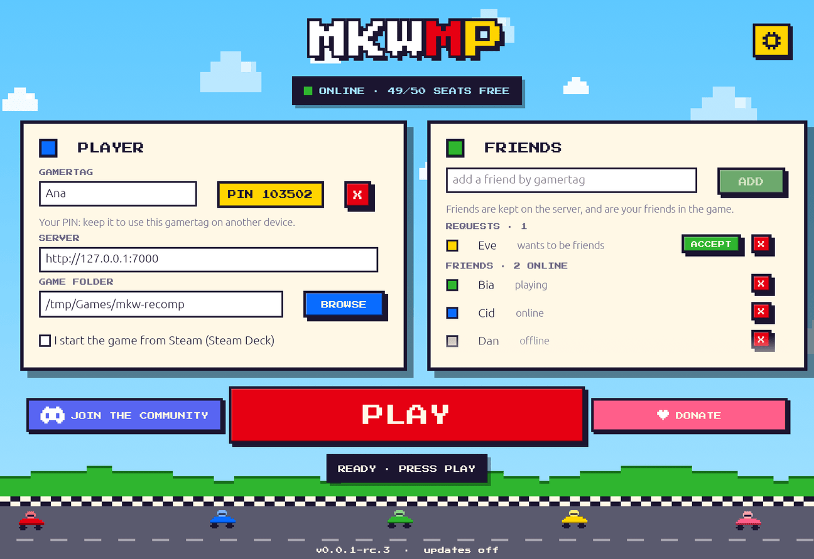
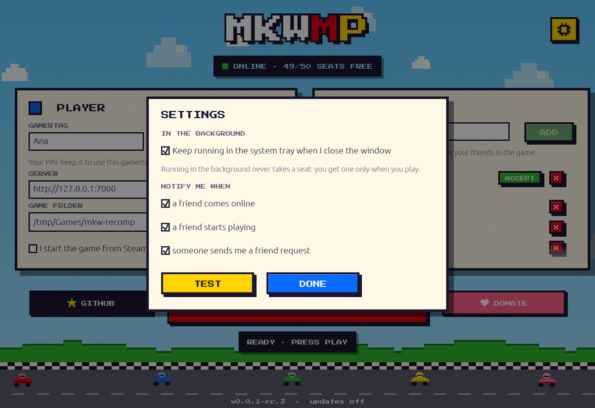

! STATUS
Developer preview (v0.0.1-rc.1). Online races and battles work end to end: full matches, from the vote to the results and back to the lobby, were played on the first lobby server. The new lobby server, with any number of lobbies, is being tested now. Friend rooms (Room ID and password) are being tested too.
★ THE LAUNCHER
One small app does everything: your gamertag, your friends, the server's free seats, and installing and updating the game patch. Close the window and it keeps running in the system tray, with a notification when a friend comes online, starts playing, or sends you a request.


1 PLAY ON THE OFFICIAL SERVER
The official server has 50 seats. You only take a seat while you play; when it's full you wait in a queue and the launcher shows your place in line.
- Install the game and the MKWMP patch: Windows or Steam Deck / SteamOS.
- Open the launcher. Type a gamertag and press REGISTER: you get a 6-digit PIN. Keep it: it's how you use the same gamertag on another PC or your Deck. Pick the game folder. The server is already set to the official one (
https://mkw.anarqz.dev). - Add friends by gamertag. They accept (or decline) in their launcher, and then you see each other as playing, online or offline, and you're friends in the game too.
- Press PLAY. The launcher updates itself and the game patch, takes a seat (or queues), and starts the game. Your seat is held until you close the game or press STOP.
- In the game, choose Online Play → Race or Online Play → Battle (1P). Players who pick the same mode are matched together, and new lobbies open as more players arrive. Until you click Online Play, the game behaves exactly like the normal offline game.
FRIENDS
Kept on the server with your gamertag: add by gamertag, they accept or decline. Up to 100 friends. Removing a friend, or deleting your gamertag, removes it on both sides.
GAMERTAGS
3–16 characters: letters, digits, - and _; case doesn't count. Yours on that server, protected by your PIN (stored hashed). Unused for 6 months, it becomes free again.
SEATS & QUEUE
Having the launcher open doesn't take a seat; PLAY does. A full server queues you in order. If a launcher stops responding, its seat goes to the next player after a minute.
2 INSTALL ON WINDOWS
- Set up mkw-recomp 0.1.10 (Windows build) with your own copy of the game, as the mkw-recomp README describes. MKWMP needs game version 1.0.0; other versions won't work.
- Get the launcher: download
mkwmp-launcher-x86_64-windows.exefrom the latest release and put it anywhere, for example in the game folder. It keeps its settings inclient.tomlnext to itself. - Open it and press PLAY (see Play). The first run installs the game patch (
winmm.dll) into the game folder. It also copies your system'swinmm.dllthere aswinmm_host.dll, and saves anywinmm.dllalready there aswinmm.dll.bak. Every download is checked against the release's signature. - Play. The launcher keeps itself and the patch up to date. Without the launcher, the game stays offline as normal.
Game folder after setup: mkw.exe, mkwgame.dll, SDL3.dll, …, winmm.dll (MKWMP), winmm_host.dll (your system's copy), mkwmp.toml (written by the launcher for the server you play on). Updates to the patch wait until the game is closed.
3 STEAM DECK & STEAMOS
The game runs as the Windows build of mkw-recomp under Proton. The native Linux build can't load the patch. Do the setup in Desktop Mode.
- Game folder. Put the Windows mkw-recomp 0.1.10 build with your own game files in a folder, for example on the SD card.
- Add to Steam. Add
mkw.exeas a non-Steam game. Under Properties → Compatibility, force Proton 10.0 (install it from Steam if needed). Proton 11 can't see the controller. - Launch options (Properties → General):
WINEDLLOVERRIDES="winmm=n,b" GRPC_DNS_RESOLVER=native MKW_MESH_COMPUTE=1 MKW_ASSUME_FOCUS=1 %command% --play - Launcher. Download
mkwmp-launcher-x86_64-linuxfrom the latest release, make it executable (right-click → Properties → Permissions, orchmod +x), and open it. Register your gamertag (or enter the PIN of the one you already have), set the game folder, and tick "I start the game from Steam". The first PLAY installs the patch and copies Proton 10.0'swinmm.dllin aswinmm_host.dll. - Play. Press PLAY in the launcher, then start the game from Steam. Press STOP when you're done to free your seat. You can also add the launcher to Steam as a non-Steam game: in Game Mode it opens fullscreen with large text.
The controller wakes up 20–50 seconds after the game starts; MKWMP fixes up Steam Input under Proton by itself. Both a Steam Deck and a ROG Ally X running SteamOS have been tested.
4 HOST YOUR OWN SERVER
Play with your friends on your own server: one Docker Compose command on any Linux machine (a small VM with 1 vCPU and 1 GB is plenty, or a PC on your LAN).
git clone https://github.com/anarqz/mkwmp && cd mkwmp
cp .env.example .env # set MKWMP_PUBLIC_IP
docker compose up -d --buildThen everyone sets the launcher's SERVER to http://<your IP>:7000, registers a gamertag there and presses PLAY.
WHAT RUNS
The seat server (gamertags, friends, seats and queue) and the lobby (matchmaking, Gamesync, TURN relay). First start creates every key and the lobby's certificate.
PORTS
Open TCP 7000, 8905, 8906 and UDP 3478, 10025, 49152–49407. Optional HTTPS with a domain: --profile https.
SQLITE
Gamertags, hashed PINs and friends live in one SQLite file in the Docker volume. Seats are in memory: after a restart, launchers rejoin on their own.
Coming with rc.2 (not released yet): players need the rc.2 launcher and game patch to play on a server like this, since they trust each server's own certificate; rc.1 only reaches the official server. Over plain http://, PINs travel unencrypted: for a server on the internet, use the HTTPS profile. Without Docker, or behind a Cloudflare tunnel: see the full hosting guide.
? FAQ
- Is this official?
- No. MKWMP is an unofficial community project, not affiliated with or endorsed by Nintendo. You need your own copy of the game.
- Why a queue?
- Each server has a fixed number of seats so its lobby stays responsive. A seat is yours from PLAY until you close the game or press STOP.
- Can someone skip the queue?
- No. The lobby only lets in games holding a ticket signed by the seat server, and checks that the ticket's seat is still held.
- Where are my friends and gamertag stored?
- On the server you play on, in its database: your gamertag, your PIN (hashed, never in plain text) and your friend list. Deleting your gamertag in the launcher removes all of it.
- I forgot my PIN.
- The server's admin can reset it.